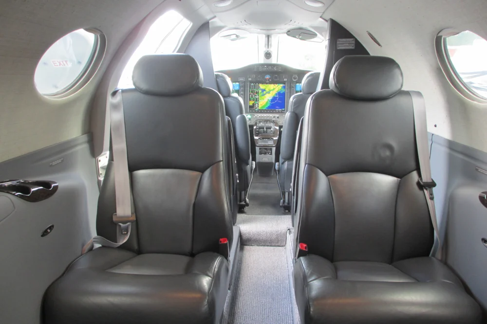
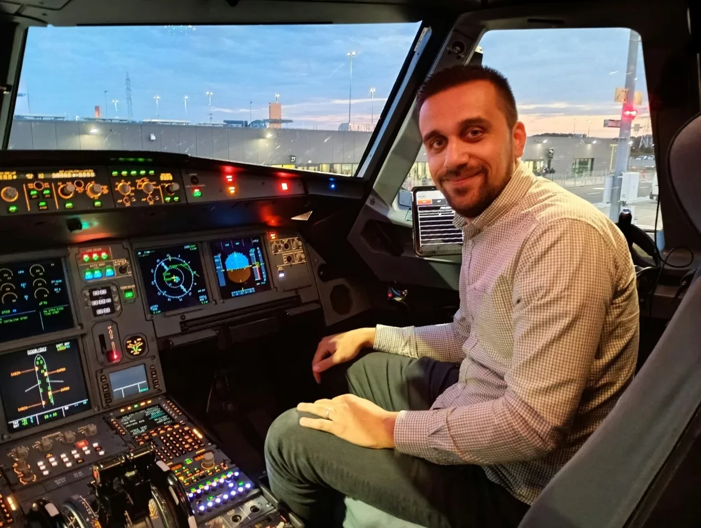
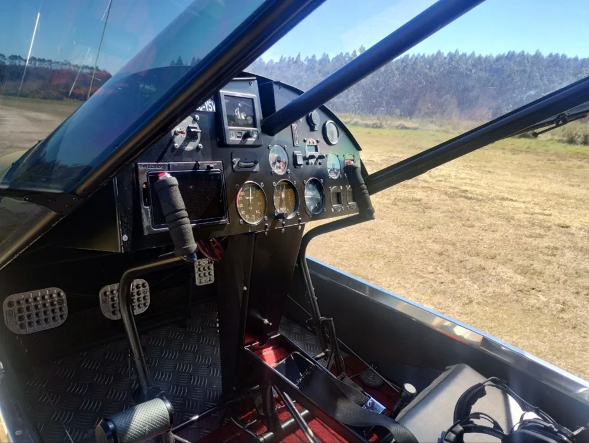
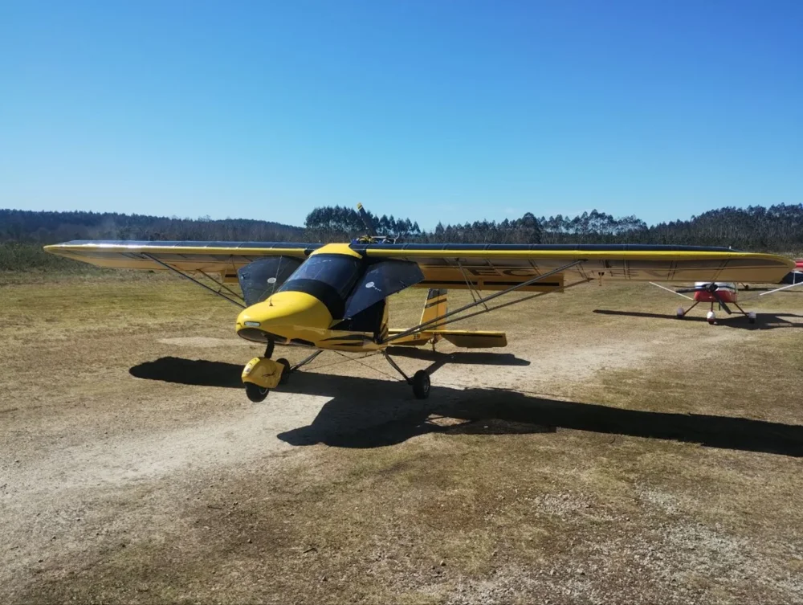
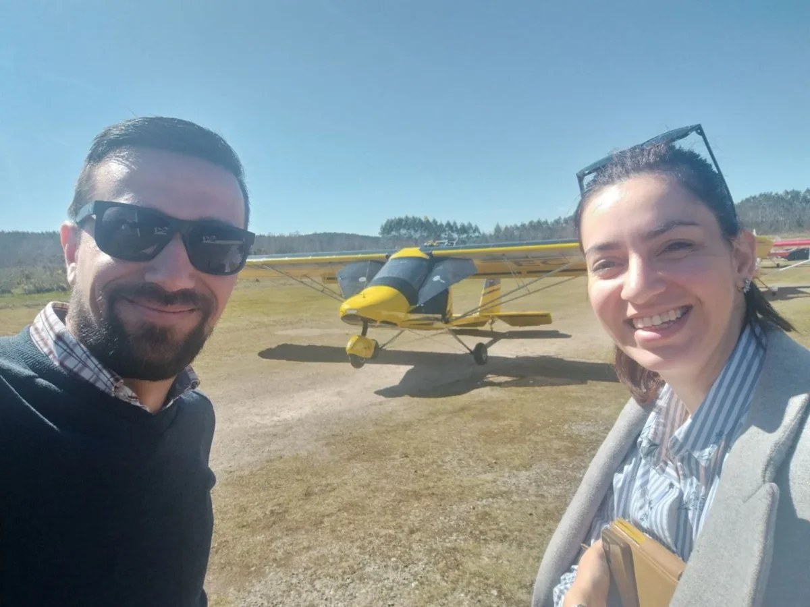
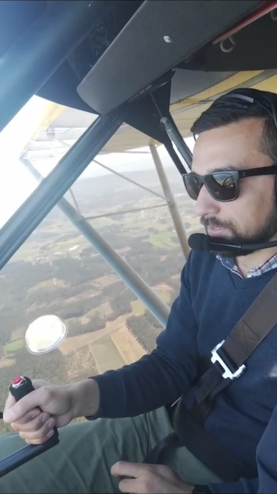

01 / INTERIOR
Cabin & upholstery care
Seats, trim, carpets and cabin touchpoints. Focused cleaning for leather and textiles, with the approach agreed for each material.
Discuss cabin carePETRU & INÉS — HIGHER STANDARDS
Aircraft Cleaning · Detailing · Cabin Care
Considered care for the aircraft you love to fly. A personal approach for private owners, light aviation and ULM operators.

01 / Services
From the cabin to the exterior, we define the work around your aircraft, its materials and your priorities.

Seats, trim, carpets and cabin touchpoints. Focused cleaning for leather and textiles, with the approach agreed for each material.
Discuss cabin care
Attention to accessible surfaces around the flight deck. Sensitive areas and any operator restrictions are clarified before work begins.
Discuss cockpit care
Agreed care for exterior surfaces, glazing and insect residue. We assess the finish, condition and access before selecting the scope.
Discuss exterior careA tailored scope. A clear quote. Everything discussed before arrival.
02 / Built for Light Aviation
For owners who know their aircraft inside out, the details matter. We focus on the personal world of light aviation, where direct communication and thoughtful preparation make a difference.
03 / Our Standard
Good aircraft care starts with preparation, an agreed scope and attention to the surfaces in front of us.
We discuss the finish, surfaces and relevant care instructions before choosing the approach.
Access, delicate areas and operator restrictions are agreed before the appointment.
We bring the products, equipment and consumables needed for the work we have agreed.
Speak directly with Petru and Inés, from your first enquiry through to the final walkthrough.
Cleaning and presentation care only. Maintenance, inspections and airworthiness decisions remain with the aircraft’s owner, operator and authorised personnel.

04 / About Petru & Inés
We are Petru and Inés. Higher Standards brings together our interest in aviation and our attention to thoughtful, detailed work.
We are building a personal service for aircraft owners and operators, with clear communication and a scope agreed before every visit. Our priority area is Bucharest and Ilfov; suitable appointments elsewhere in Romania can be discussed.

Our connection to aviation
The yellow ultralight holds a special place in our story: it is the aircraft Petru flew for the first time.
That personal experience is part of what draws us to aviation. Higher Standards brings that interest into the care and attention we want to offer aircraft owners.
05 / How it works
No fixed package for every aircraft. A straightforward conversation helps us prepare for yours.
Aircraft model, aerodrome, condition and the work you have in mind.
We discuss materials, priorities and access, then provide a tailored quote.
Choose a suitable date and confirm the practical details before arrival.
We complete the agreed care and walk through the result with you.
06 / Contact
Tell us what you need. Your request opens in WhatsApp, ready for you to review and send. Photos can be shared there to help us understand the scope.